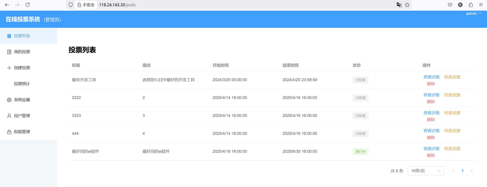
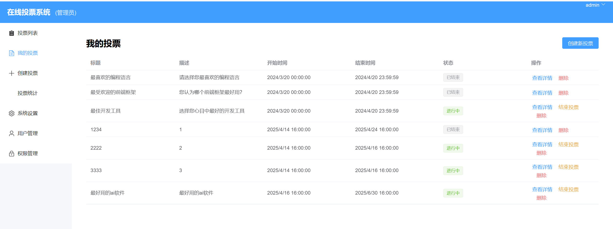
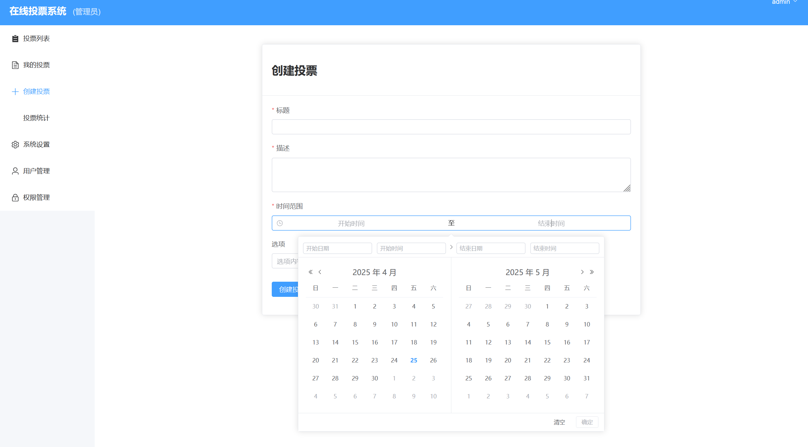
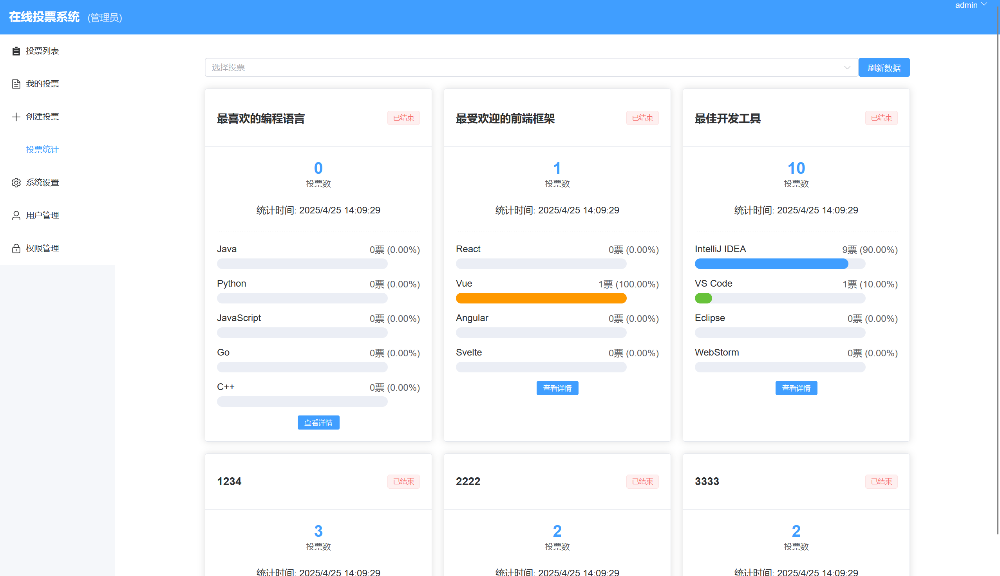
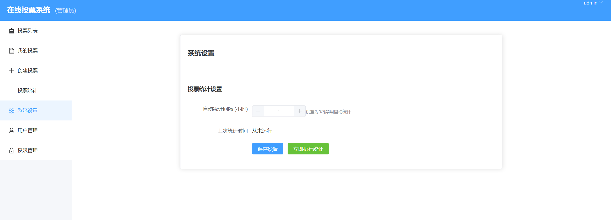
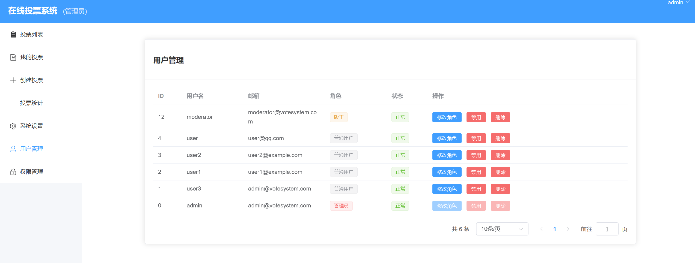
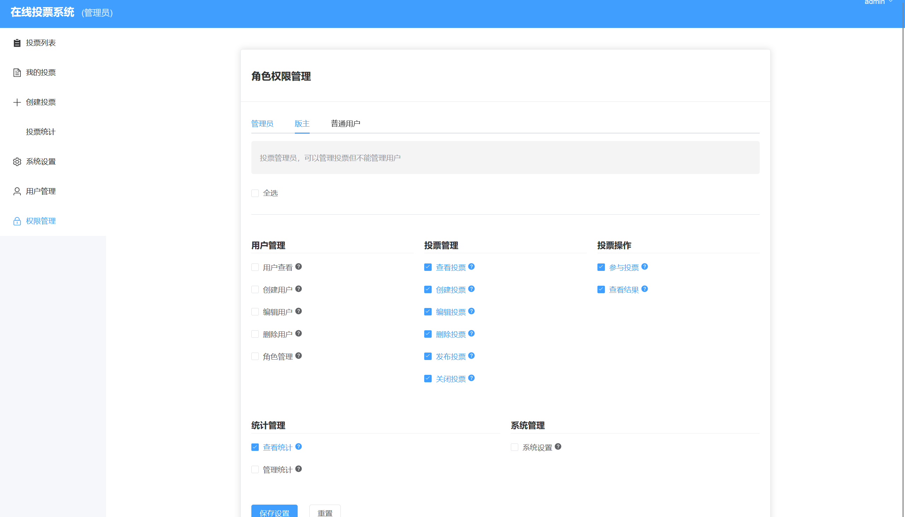

一个现代化的在线投票系统，提供直观的用户界面和强大的后台管理功能。本系统支持多种投票类型，用户权限管理，实时统计和数据可视化等功能
项目介绍
本程序使用cursor工具进行辅助变成，耗时总计约24小时，目前已部署到腾讯云服务器。可通过
直接访问（云服务器到期时间2025-05-17）
系统架构
整体架构
前端（Vue 3） <--> Nginx反向代理 <--> 后端（Spring Boot）<--> MySQL数据库技术选型
前端技术栈
- Vue 3 - 渐进式JavaScript框架
- Element Plus UI - 现代化的UI组件库
- Vite - 下一代前端构建工具
- Vue Router - 官方路由管理器
- Pinia - Vue 3的状态管理库
- Axios - HTTP客户端
- ECharts - 数据可视化图表库
- PDF-lib - PDF生成工具
后端技术栈
- Spring Boot 3 - 应用开发框架
- Spring Security - 安全框架
- Spring Data JPA - 数据访问层
- MySQL 8 - 关系型数据库
- JWT - 用户认证
- WebSocket - 实时通信
功能特性
用户功能
- 用户注册和登录
- 支持用户名/密码注册
- 基于JWT的安全认证
- 记住登录状态
- 查看当前可用的投票列表
- 支持分页和筛选
- 实时更新投票状态
- 参与投票并查看投票结果
- 防重复投票机制
- 实时显示投票结果
- 多种图表展示方式
- 查看历史投票记录
- 个人投票历史
- 参与率统计
- 移动端适配，支持响应式布局
- 自适应界面设计
- 触摸优化交互
管理功能
- 创建和管理投票主题
- 多选项投票支持
- 时间限制设置
- 权限控制配置
- 用户权限管理
- 角色分配
- 权限细粒度控制
- 用户状态管理
- 投票数据统计和分析
- 实时统计
- 多维度分析
- 图表可视化
- 生成投票报告
- PDF格式导出
- 数据图表集成
- 系统配置管理
- 统计任务配置
- 系统参数设置
系统特性
- 实时统计和更新
- WebSocket实时推送
- 定时统计任务
- 防止重复投票
- 用户验证
- IP限制
- 时间限制
- 数据可视化展示
- 多种图表类型
- 自定义显示配置
- 完整的权限控制
- 基于角色的访问控制(RBAC)
- 细粒度权限管理
- 安全的用户认证
- JWT令牌认证
- 密码加密存储
项目链接
运行截图

